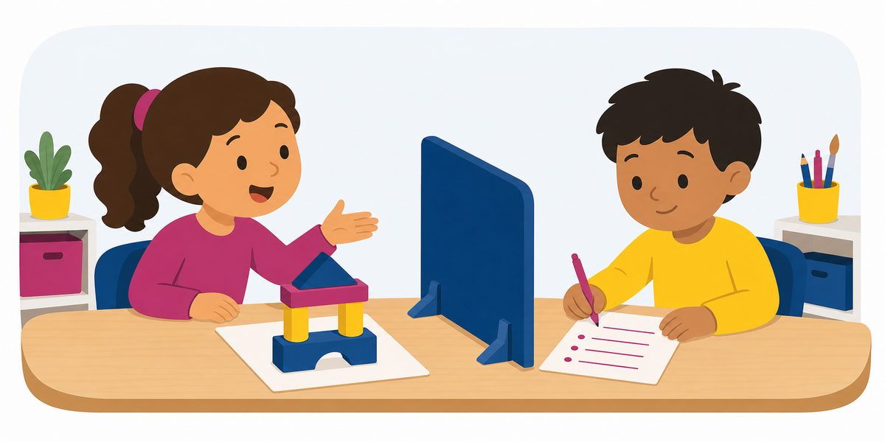

Activity 68 ·
Oral-to-Written Procedure

Materials A simple completed construction or drawing.
What to describe
The Describer dictates a clear lab or engineering procedure; the Builder writes it as numbered, repeatable steps, then they check it against the original.
Roles
How a round works
Make it harder or easier
Harder
Describe using only shape, position, and color words — no gestures, no questions.
Easier
Allow yes/no questions and agree on a shared starting shape or anchor point.
Reflect
Skills
Standards & alignment
TEKS Fine Arts / ELAR TEKS · describing, creating & precise descriptive language (confirm grade code)
NGSS NGSS SEP-8: Obtaining, Evaluating & Communicating Information